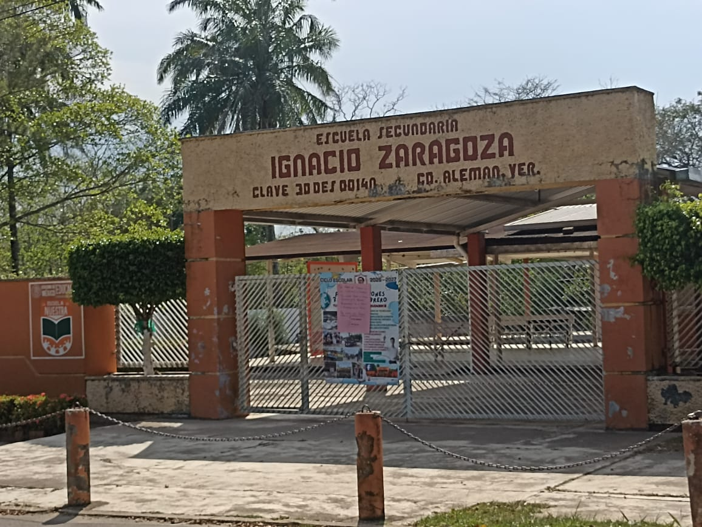

1.Escuela Secundaria IGNACIO ZARAGOZA.
Una secundaria ideal para que las y los estudiantes puedan aprender.

2.Tianguis.
El tiaguis se pone cada jueves, ahí puedes encontrar ropa, cobijas, zapatos, juguetes. Practicamente todo lo que necesite para el uso personal, familiar, etc.

3.Centro Universitario Ciudad Alemán.
Una universidad particular, cuenta con una variedad de especialidades, contando con licenciaturas, ingenierías. También bachillerato en solo año y medio.

4.ITSCO. Campus Ciudad Alemán.
Una Universidad especializada en áreas como; Ingeniería Industrial, Gestión empresarial, etc. Cuenta con becas. Ideal para quienes quieran estudiar alguna ingeniería.